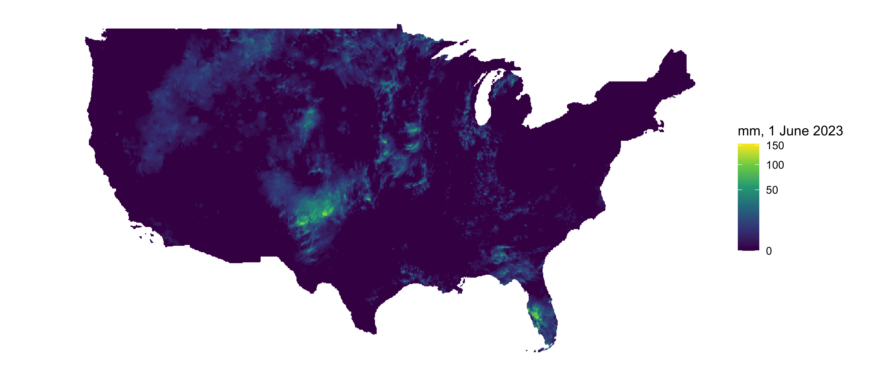
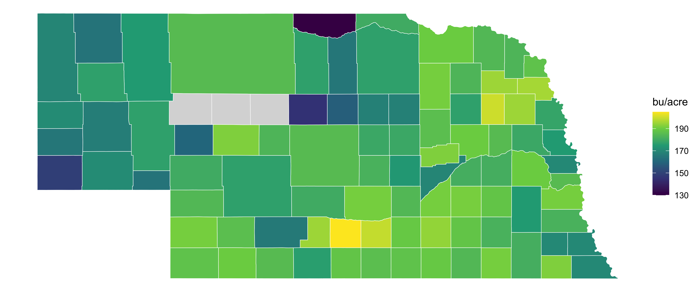

Much of the spatial data in agricultural and environmental research is public: county boundaries from the Census Bureau, crop statistics from USDA, daily weather from PRISM, crop maps from the Cropland Data Layer. R packages download each of them in one line, and an AI assistant can write that line. What it cannot do is:
A download can succeed and still hold less than you asked for, or something other than you meant. So today is about:
sf, terra, tidyterra, tigris, rnassqs, prism, tidyverse and here packages if you have not already.Every download function needs the same five decisions from you. None of them can come from the AI, because they come from your research question:
| Decide | Example | Why it matters | |
|---|---|---|---|
| 1 | What dataset and variable | USDA-NASS survey, “corn, grain, irrigated, yield” | Similar-sounding variables differ (irrigated or not, planted or harvested acres) |
| 2 | What area | Nebraska and Kansas | Too small misses data; too large can be huge |
| 3 | What time | 2000 to 2005; 1 to 3 June 2023 | Each source covers different years; recent values may be revised later |
| 4 | What spatial unit | counties; cells of about 4 km | Decides what one row (or one cell) is |
| 5 | What units | bushels per acre; millimetres | Needed to read the values, and often not in the data itself |
Write these five down before asking. They are also what you check the download against afterwards.
In the way of working of this course, the AI writes code into a .qmd and you render it, which runs every chunk again. A chunk that downloads would download again at every render. That is slow, it puts load on a public server, and worse, the data can change between renders: sources revise recent values, and you would not know your numbers had moved.
There is also a hard limit: PRISM refuses a file downloaded more than twice in a day, so a .qmd that downloads at every render stops working by its third render.
So a download is split in two:
data/raw/), only if the file is not there yet, and record the dateif (!file.exists(path)) means “only if the file does not exist yet”. To download again on purpose, delete the file.
Some sources (USDA-NASS among them) require an API key: a personal code, like a password, that identifies you to the server. A key written into a .qmd is in the rendered HTML, in your git history, and on any website you publish to.
Keep it in a file R reads at startup, .Renviron in your home folder, as a line NASS_API_KEY=your-key, and in code read it with:
Tell the AI this in the request: “read the key with Sys.getenv("NASS_API_KEY"); never write the key itself”.
| Part | What it is | Required? |
|---|---|---|
package::download_function |
The function that talks to one source | Yes |
what |
The dataset or variable | Usually |
where |
The area: states, counties, a bounding box, a layer | Usually |
when |
Years or dates | Usually; some functions pick a year for you if left out |
options |
Detail level, output format, a key | No |
| Source | Function | What | Where | When | Returns |
|---|---|---|---|---|---|
| Census boundaries | tigris::counties() |
(the function name) | state = |
year = |
vector layer |
| USDA-NASS statistics | rnassqs::nassqs() |
short_desc = |
state_alpha =, agg_level_desc = |
year =, or year__GE = and year__LE = for a range |
table, no shapes |
| PRISM weather | prism::get_prism_dailys() |
type = (“ppt”, “tmax”, …) |
the whole US, always | minDate =, maxDate = |
files on disk, one folder per day |
| Cropland Data Layer | CropScapeR::GetCDLData() |
(the function name) | aoi = with type = |
year = |
raster |
The names differ; the three questions (what, where, when) do not.
tigris::states(), tigris::tracts(), tigris::roads(): the same pattern for other boundariescb = TRUE in tigris: simplified boundaries, much smaller files, enough for maps and joins at county levelprism::prism_set_dl_dir("folder") before get_prism_dailys(): where PRISM files are saved, set oncelapply(years, function(y) rnassqs::nassqs(..., year = y)) |> bind_rows(): one download per year, stacked, for requests too large for one call (Quick Stats refuses more than 50,000 rows)tigrisThe code that made tigris_ne_counties.gpkg:
What arrived, checked against what was asked for:
cat(
paste("rows: expected 93 (Nebraska's counties), got", nrow(ne_tigris)),
paste("states: expected 31 (Nebraska's code), got", paste(unique(ne_tigris$STATEFP), collapse = ", ")),
paste("CRS: got", st_crs(ne_tigris)$Name),
sep = "\n"
)rows: expected 93 (Nebraska's counties), got 93
states: expected 31 (Nebraska's code), got 31
CRS: got NAD83ALAND and AWATER are land and water area in square metres, a unit you only learn from the documentation.
Connecticut, 2021 and 2022, the same call with only year changed:
[1] "Fairfield" "Hartford" "Litchfield" "Middlesex" "New Haven"
[6] "New London" "Tolland" "Windham" [1] "Capitol" "Greater Bridgeport"
[3] "Lower Connecticut River Valley" "Naugatuck Valley"
[5] "Northeastern Connecticut" "Northwest Hills"
[7] "South Central Connecticut" "Southeastern Connecticut"
[9] "Western Connecticut" In 2022 the Census Bureau replaced Connecticut’s 8 counties with 9 planning regions, with new codes. Data for 2020 joined to 2022 boundaries by county code matches nothing in Connecticut. Most states change less, but county lines and codes do change, so ask for the boundary year that matches your data’s years.
NASS Quick Stats holds survey and census statistics for US agriculture by state and county. The rnassqs package downloads from it. A request for irrigated corn yield by county in Illinois and Nebraska, 2000 to 2005, is written like this (shown, not run: it needs a key):
nassqs_auth() hands the key to the package for the session. short_desc is the name of the data item, and it must match NASS’s own wording exactly: search for it on the Quick Stats website, or ask the AI to list the items that contain your words, and choose one yourself. Quick Stats returns no shapes; to map the result, merge it with county boundaries by state and county code (lecture 03-3).
The slides read il_ne_corn_yield.rds, a download like this one, saved for an earlier version of the course with the tidyUSDA package (no longer on CRAN). It holds the same Quick Stats columns, plus county shapes that tidyUSDA attached.
state_name county_name county_code year Value unit_desc
1 NEBRASKA BANNER 007 2005 165 BU / ACRE
2 NEBRASKA BANNER 007 2004 160 BU / ACRE
3 NEBRASKA BANNER 007 2003 142 BU / ACRE
4 NEBRASKA BANNER 007 2002 127 BU / ACRE[1] 5757 columns, of which a handful matter: where (state_name, county_code), when (year), the value (Value) and its units (unit_desc, here BU / ACRE).
cat(
paste("states: expected ILLINOIS, NEBRASKA, got", paste(sort(unique(nass_tbl$state_name)), collapse = ", ")),
paste("years: expected 2000 to 2005, got", paste(range(nass_tbl$year), collapse = " to ")),
paste("rows: expected at most", (102 + 93) * 6, "(counties times years), got", nrow(nass_tbl)),
sep = "\n"
)states: expected ILLINOIS, NEBRASKA, got NEBRASKA
years: expected 2000 to 2005, got 2000 to 2005
rows: expected at most 1170 (counties times years), got 546The first check fails: Illinois is missing, with no error and no warning. NASS publishes no irrigated corn yield by county for Illinois, where corn is mostly not irrigated, so the request returned what exists. Without the check, an analysis of “Illinois and Nebraska” would quietly be about Nebraska alone.
Rows per year, and some unusual rows:
year n
1 2000 92
2 2001 91
3 2002 91
4 2003 90
5 2004 91
6 2005 91 year county_name county_code asd_desc Value
1 2005 OTHER (COMBINED) COUNTIES 998 NORTH 160.0
2 2004 OTHER (COMBINED) COUNTIES 998 NORTH 170.0
3 2003 OTHER (COMBINED) COUNTIES 998 NORTH 130.0
4 2002 OTHER (COMBINED) COUNTIES 998 NORTH 149.0
5 2001 OTHER (COMBINED) COUNTIES 998 NORTH 165.3
6 2000 OTHER (COMBINED) COUNTIES 998 NORTH 137.5OTHER (COMBINED) COUNTIES, code 998: the counties not published individually in one district, combined. It is not a county, matches no county boundary (6 rows with an empty shape in this file), and should not be averaged with the counties.Value can arrive as text, with commas in large numbers and codes such as (D) where a value is withheld. Ask for its type to be printed, and for the conversion to a number to report how many values became missing.PRISM provides daily precipitation and temperature for the contiguous US, in cells of about 4 km. The download that made the PRISM-ppt folder:
It saves one folder per day, each holding several files with the same name and different extensions. The raster itself is the .bil file; the others describe it.
prism_files <- list.files("PRISM-ppt", pattern = "[.]bil$", recursive = TRUE, full.names = TRUE)
prism_files[1] "PRISM-ppt/prism_ppt_us_25m_20230601/prism_ppt_us_25m_20230601.bil"
[2] "PRISM-ppt/prism_ppt_us_25m_20230602/prism_ppt_us_25m_20230602.bil"
[3] "PRISM-ppt/prism_ppt_us_25m_20230603/prism_ppt_us_25m_20230603.bil"list.files(..., pattern = "[.]bil$") finds every file ending in .bil; rast() reads them as one raster with one layer per day. The date is in each file’s name, and the folder names follow PRISM’s own naming, which changed in 2025: code written for older downloads, which looked for names such as PRISM_ppt_stable_4kmD2_..., finds nothing in a new download.
cat(
paste("layers: expected 3 (1 to 3 June 2023), got", nlyr(prism)),
paste("dates in names:", paste(sub(".*_(\\d{8})$", "\\1", names(prism)), collapse = ", ")),
paste("CRS: got", crs(prism, describe = TRUE)$name),
paste("cell size: expected about 4 km, got", round(res(prism)[1], 4), "degrees"),
paste("range: expected 0 to a few hundred mm, got", 0, "to", prism_max),
sep = "\n"
)layers: expected 3 (1 to 3 June 2023), got 3
dates in names: 20230601, 20230602, 20230603
CRS: got NAD83
cell size: expected about 4 km, got 0.0417 degrees
range: expected 0 to a few hundred mm, got 0 to 159.3The units, millimetres, are not in the raster. They are on PRISM’s website and in the .info.txt file beside each .bil. A cell of 0.0417 degrees is about 4.6 km north to south and 3.5 km east to west in Nebraska.

The whole contiguous US, whatever area you need: PRISM has no “where” argument. Crop to your area after reading (lecture 09-6).
The Cropland Data Layer (CDL), from USDA-NASS, is a raster of what was grown in each 30 m cell of the contiguous US, every year since 2008 (some states earlier). CropScapeR::GetCDLData() downloads it for an area:
(Shown, not run: the CropScape server timed out when these slides were made.)
aoi = 31109 with type = "f" asks for one county by its 5-digit code (31109 is Lancaster County, Nebraska). An sf layer with type = "b" asks for the rectangle around it.
A CDL cell holds a code for a crop, not a quantity: 1 is corn, 5 is soybeans, 24 is winter wheat, and so on, listed in the CDL documentation. Two consequences:
terra::aggregate()) must take the most common code (fun = "modal"), not the default mean.At 30 m, a whole state is hundreds of millions of cells. Ask for the smallest area that answers your question.
The same way of working as on the slide of this name in lecture 02-1: you ask, the AI writes into your .qmd with one plain-English sentence above each chunk, you render, and you judge the HTML. For a download, that adds one rule: the download runs once and is saved, and every render reads the saved file (previous section). Every request for code ends with the closing instructions of lecture 03-1, under Recommended requests.
The AI knows the packages. Your request supplies what it cannot know:
Sys.getenv("..."), never the key itselfNot sure of the exact variable name?
Ask first, without downloading the data: “List the NASS data items for corn that contain the words YIELD and IRRIGATED.” Then choose the item yourself and put it in the download request.
The AI has to guess which corn yield (irrigated or not, grain or silage), which years, at what level, and where the key is. It will often write the key into the code as a placeholder you then replace, and download at every render.
In my R project, download from USDA-NASS Quick Stats the county-level
survey data item "CORN, GRAIN, IRRIGATED - YIELD, MEASURED IN BU / ACRE"
for Illinois and Nebraska, 2000 to 2005, using rnassqs. Read my key with
Sys.getenv("NASS_API_KEY"); never write the key. Save the result to
data/raw/corn_yield_nass.rds, and only download if that file does not
exist. Then read it from the file, and make Value a number.
Then check: which states arrived (I expect both), which years (I expect
2000 to 2005), the number of rows per state and year (at most the number
of counties), the rows whose county is not a real county, the units in
unit_desc, and the range of Value. Draw a map of 2005 yields by county,
merging with the county boundaries in data/raw/counties_2022.gpkg by
state and county code.
Put the code in my Quarto document analysis/download.qmd, under the
heading "Corn yield from NASS", as R code chunks. Above each chunk,
write one plain-English sentence saying what it does and why. Build
every path with here::here(); no setwd(), no absolute paths. Print each
check on its own line as "name of check: expected X, got Y". Render the
document to HTML.In the rendered HTML, a sentence, then the chunk it describes.
Download the yields once, saving them to data/raw, and read the saved file.
path <- here::here("data", "raw", "corn_yield_nass.rds")
if (!file.exists(path)) {
rnassqs::nassqs_auth(key = Sys.getenv("NASS_API_KEY"))
nass <- rnassqs::nassqs(
source_desc = "SURVEY",
short_desc = "CORN, GRAIN, IRRIGATED - YIELD, MEASURED IN BU / ACRE",
agg_level_desc = "COUNTY", state_alpha = c("IL", "NE"),
year__GE = 2000, year__LE = 2005
)
saveRDS(nass, path)
}
nass <- readRDS(path)
nass$Value <- as.numeric(gsub(",", "", nass$Value))This chunk is shown, not run. The checks below run on the saved download described on the “Statistics” slide.
Print the checks.
cat(
paste("states: expected ILLINOIS, NEBRASKA, got", paste(sort(unique(nass$state_name)), collapse = ", ")),
paste("years: expected 2000 to 2005, got", paste(range(nass$year), collapse = " to ")),
paste("rows that are not a county: expected 0, got", sum(grepl("OTHER", nass$county_name))),
paste("units: expected BU / ACRE, got", paste(unique(nass$unit_desc), collapse = ", ")),
paste("Value range: expected 100 to 250, got", min(nass$Value), "to", max(nass$Value)),
sep = "\n"
)states: expected ILLINOIS, NEBRASKA, got NEBRASKA
years: expected 2000 to 2005, got 2000 to 2005
rows that are not a county: expected 0, got 6
units: expected BU / ACRE, got BU / ACRE
Value range: expected 100 to 250, got 120 to 207Two checks fail, and both matter: Illinois is missing, and 6 rows are combined counties. You would ask the AI to remove the combined rows, and rethink the study: Illinois has no data for this item.
| Ask the AI to print | Catches | What only you can supply | |
|---|---|---|---|
| 1 | every requested area: present or not | areas with no data, silently left out | the list you asked for |
| 2 | every requested year or day: present or not | years not yet published, a date range one day short | the list you asked for |
| 3 | rows per area and year (or layers per day) | units not published, duplicated downloads | how many units each area has |
| 4 | rows that are not ordinary units | combined counties, state totals, codes such as 998 | (look at the values of the ID column) |
| 5 | units and the range of values | a different variable from the one you meant; missing-value codes | the units from the documentation, a believable range |
| 6 | CRS and a map | wrong area, wrong boundaries | where the area is |
The map from the strong request, 2005 yields with the combined-counties row removed:
yield_2005 <- nass |>
sf::st_drop_geometry() |>
filter(year == 2005, county_code != "998") |>
select(state_fips_code, county_code, Value)
ne_yield <- left_join(ne_tigris, yield_2005, by = c("STATEFP" = "state_fips_code", "COUNTYFP" = "county_code"))
ggplot(ne_yield) +
geom_sf(aes(fill = Value), colour = "white", linewidth = 0.2) +
scale_fill_viridis_c(name = "bu/acre", na.value = "grey85") +
theme_void()
Grey counties are those with no published value for 2005: the merge by state and county code kept them, with a missing value. A map shows at once what a row count only implies: which counties are missing, and whether they cluster.
The checks above apply to any download. What you know about the subject gives stronger ones.
For the downloaded data, print the number of distinct counties per
state, and compare it with the number of counties in each state
according to <the boundary layer you downloaded>.
Put the code in my Quarto document analysis/download.qmd, under the
heading "Checks", as R code chunks. Above each chunk, write one
plain-English sentence saying what it does and why. Build every path
with here::here(); no setwd(), no absolute paths. Print each check on
its own line as "name of check: expected X, got Y". Render the document
to HTML.A student asked an AI to “download daily max temperature for Kansas for July 2023 and get the average per county”, and got this:
prism::prism_set_dl_dir("C:/Users/kim/prism")
prism::get_prism_dailys(type = "tmax", minDate = "2023-07-01", maxDate = "2023-07-30")
tmax <- rast(list.files("C:/Users/kim/prism", pattern = "bil", recursive = TRUE, full.names = TRUE))
ks <- tigris::counties(state = "KS")
county_tmax <- terra::extract(mean(tmax), ks, fun = mean)A. What does each line do?
B. Which dates are missing from “July 2023”?
C. What will pattern = "bil" pick up besides the .bil files?
D. What happens at every render, and what should change?
A. Sets the PRISM folder; downloads daily maximum temperature for 1 to 30 July; reads every file whose name contains “bil”; downloads Kansas counties; averages the days into one layer and extracts its mean per county.
B. 31 July. The check “layers: expected 31” would have caught it.
C. Every file whose name contains “bil” anywhere, including the .bil.aux.xml file that comes with each day’s download. rast() stops with “cannot open this file as a SpatRaster”, so this one fails with an error, which is the good case. pattern = "[.]bil$" matches only names ending in .bil.
D. Both downloads run again, from a folder on one computer. Save to a project folder built with here::here(), download only if the files are not there, and give tigris::counties() a year = so the boundaries do not change when the package’s default year does.
Copy one, then replace every <...> with your own decisions. Every request for code ends with the closing instructions.
The lines that end every request for code. Replace the two blanks; leave “expected X, got Y” as it is, because it tells the AI how to print each check:
Put the code in my Quarto document <path to your .qmd>, under the
heading "<heading>", as R code chunks. Above each chunk, write one
plain-English sentence saying what it does and why. Build every path
with here::here(); no setwd(), no absolute paths. Print each check on
its own line as "name of check: expected X, got Y". Render the document
to HTML.A chat assistant cannot render: paste its chunks into your .qmd and render it yourself. An agent in your editor or terminal can do every step.
Using rnassqs, list the NASS data items (short_desc) for the commodity
<commodity> that contain all of these words: <words>. Read my key with
Sys.getenv("NASS_API_KEY"); never write the key. Print the matches.
Put the code in my Quarto document <path to your .qmd>, under the
heading "<heading>", as R code chunks. Above each chunk, write one
plain-English sentence saying what it does and why. Build every path
with here::here(); no setwd(), no absolute paths. Print each check on
its own line as "name of check: expected X, got Y". Render the document
to HTML.Download the <counties, states, or other boundaries> of <area> for the
year <year>, generalised (cb = TRUE), with tigris. Save them to <path
for the saved file, ending in .gpkg>, and only download if that file
does not exist. Then read them from the file.
Then check: the number of features (I expect <number>), the CRS, which
<states or areas> are present, and draw a map.
Put the code in my Quarto document <path to your .qmd>, under the
heading "<heading>", as R code chunks. Above each chunk, write one
plain-English sentence saying what it does and why. Build every path
with here::here(); no setwd(), no absolute paths. Print each check on
its own line as "name of check: expected X, got Y". Render the document
to HTML.Download from USDA-NASS Quick Stats the <SURVEY or CENSUS> data item
"<exact data item>" at <COUNTY or STATE> level for <states>, <first
year> to <last year>, using rnassqs. Read my key with
Sys.getenv("NASS_API_KEY"); never write the key. Save the result to
<path for the saved file>, and only download if that file does not
exist. Then read it from the file, and make Value a number, printing
how many values became missing.
Then check: which states and years arrived (I expect all of them), the
number of rows per state and year (at most <number of counties>), the
rows that are not a single county, the units, and the range of Value
(I expect <lowest> to <highest>).
Put the code in my Quarto document <path to your .qmd>, under the
heading "<heading>", as R code chunks. Above each chunk, write one
plain-English sentence saying what it does and why. Build every path
with here::here(); no setwd(), no absolute paths. Print each check on
its own line as "name of check: expected X, got Y". Render the document
to HTML.Download daily PRISM <ppt, tmax, tmin or tmean> from <first date> to
<last date> into <folder for the downloads>, only if the files are not
there yet. Read every .bil file (names ending in .bil) as one raster
with one layer per day, then crop it to <the area, or the layer that
defines it>.
Then check: the number of layers (I expect <number of days>), the dates
in the layer names, the CRS, the cell size, and the range of values in
<units> (I expect <lowest> to <highest>). Draw a map of the first day.
Put the code in my Quarto document <path to your .qmd>, under the
heading "<heading>", as R code chunks. Above each chunk, write one
plain-English sentence saying what it does and why. Build every path
with here::here(); no setwd(), no absolute paths. Print each check on
its own line as "name of check: expected X, got Y". Render the document
to HTML.Explain this R code to me. For each line, write one plain-English
sentence. Then list:
1. what each download asks for: which data, area, and years or dates
2. what will happen each time the document is rendered
3. any line that could give a wrong result without an error, and what
check would reveal it
<paste the code here>| You need to understand | The AI can write |
|---|---|
| The five decisions: dataset and variable, area, time, spatial unit, units | The call to tigris, rnassqs, prism, CropScapeR |
| That a download succeeds even when part of what you asked for does not exist | The checks of what arrived |
| Which rows are not ordinary units (combined counties, totals) | The filter that removes them |
| That boundaries and codes change by year | year = |
| Why a download happens once, and where the key lives | file.exists(), Sys.getenv() |
| What the values mean, from the documentation |
Every download: write down the five decisions and what you expect to arrive. Ask for a saved, dated download, read from disk, and checks of every area and year requested, rows per unit, unusual rows, units, range and a map. Render, and judge the HTML against what you wrote down.